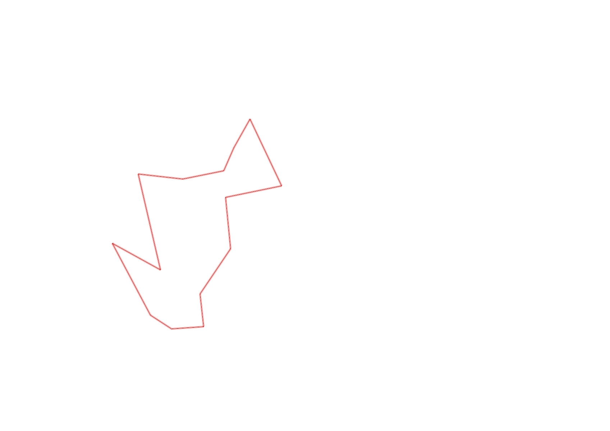
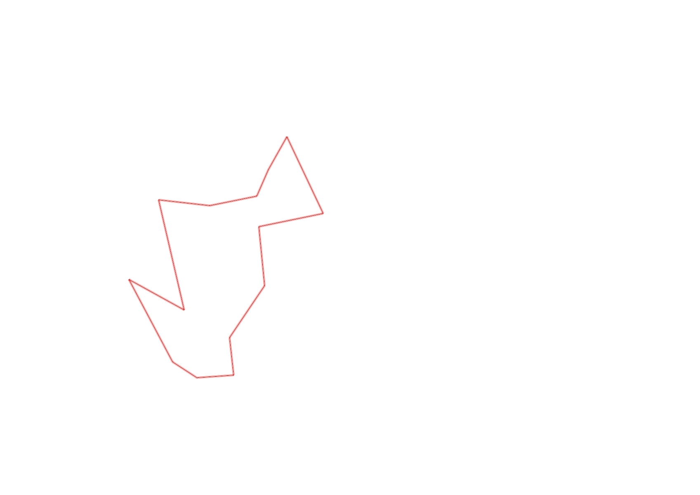

| Control |
Points |
Time Punched |
Distance |
Your Time |
Pace |
Place |
Fastest Time |
Median Time |
% Behind Fastest |
| 35 |
30 |
|
0.19 |
0:02:46 |
14:33 |
1 / 1 |
0:02:46 |
0:02:46 |
0% |
| 93 |
90 |
|
0.61 |
0:04:06 |
06:43 |
1 / 1 |
0:04:06 |
0:04:06 |
0% |
| 58 |
50 |
|
0.41 |
0:05:48 |
14:08 |
1 / 1 |
0:05:48 |
0:05:48 |
0% |
| 82 |
80 |
|
0.74 |
0:14:13 |
19:12 |
1 / 1 |
0:14:13 |
0:14:13 |
0% |
| 44 |
40 |
|
0.34 |
0:05:34 |
16:22 |
1 / 1 |
0:05:34 |
0:05:34 |
0% |
| 39 |
30 |
|
0.31 |
0:03:52 |
12:28 |
1 / 1 |
0:03:52 |
0:03:52 |
0% |
| 77 |
70 |
|
0.19 |
0:02:21 |
12:22 |
2 / 2 |
0:01:47 |
0:02:04 |
31% |
| 32 |
30 |
|
0.25 |
0:01:47 |
07:08 |
2 / 2 |
0:01:43 |
0:01:45 |
3% |
| 102 |
100 |
|
0.56 |
0:03:39 |
06:31 |
1 / 1 |
0:03:39 |
0:03:39 |
0% |
| 34 |
30 |
|
0.43 |
0:02:50 |
06:35 |
3 / 4 |
0:02:23 |
0:02:45 |
18% |
| 36 |
30 |
|
0.39 |
0:02:14 |
05:43 |
1 / 1 |
0:02:14 |
0:02:14 |
0% |
| 41 |
40 |
|
0.41 |
0:04:17 |
10:26 |
1 / 1 |
0:04:17 |
0:04:17 |
0% |
| 52 |
50 |
|
0.25 |
0:02:25 |
09:40 |
1 / 1 |
0:02:25 |
0:02:25 |
0% |
| Finish |
0 |
|
0.24 |
0:01:51 |
07:42 |
1 / 1 |
0:01:51 |
0:01:51 |
0% |
Total Distance Covered: 5.32km
Points Scored: 670
Late Penalty: 0
Final Score: 670
Total Time: 0hours 57minutes 43seconds
Efficiency: 125.94 points/km
 
